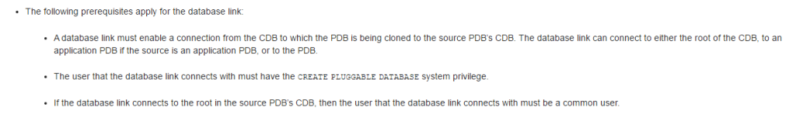
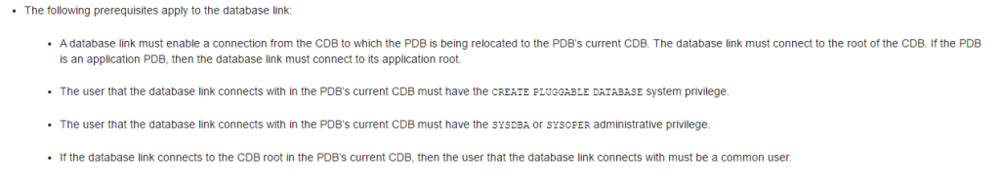

|
|
This was first published on https://blog.dbi-services.com/which-privilege-for-create-pluggable-database-from-db-link (2017-05-29)
Republishing for new followers. The content is related to the the versions available at the publication date
When cloning a PDB from a remote CDB you need to define a database link to be used in the CREATE PLUGGABLE DATABASE … FROM …@… command. The documentation is not completely clear about the privileges required on the source for the user defined in the database link, so here are the different possibilities.
Here is what the documentation says:
So you can connect to the CDB or to the PDB.
In order to connect to the CDB you need a common user with the CREATE SESSION system privilege:
SQL> create user C##DBA identified by oracle; User C##DBA created. SQL> grant create session to C##DBA container=current; Grant succeeded.
No need for CONTAINER=ALL here because you connect only to the CDB$ROOT.
Then you need the CREATE PLUGGABLE DATABASE system privilege on the PDB. You can grant it from the CDB$ROOT with the CONTAINER=ALL but it is sufficient to grant it locally on the source PDB:
SQL> alter session set container=PDB1; Session altered. SQL> grant create pluggable database to C##DBA container=current; Grant succeeded.
Note that, not documented, but the SYSOPER administrative privilege can replace the CREATE PLUGGABLE DATABASE so we can run the following instead of the previous one:
SQL> alter session set container=PDB1; Session altered. grant sysoper to C##DBA container=current; Grant succeeded.
Both ways are usable for cloning, you create a database link to this common user, on the destination, and run the CLONE PLUGGABLE DATABASE:
SQL> create database link CDB1A connect to C##DBA identified by oracle using '//localhost/CDB1A';
Database link CDB1A created.
SQL> create pluggable database PDB1CLONE from PDB1@CDB1A file_name_convert=('CDB1A/PDB1','CDB2A/PDB1CLONE');
Pluggable database PDB1CLONE created.
SQL> alter pluggable database PDB1CLONE open;
Pluggable database PDB1CLONE altered.
This was using a common user but you can also define the user locally on the source PDB:
SQL> alter session set container=PDB1; Session altered. SQL> create user PDBDBA identified by oracle; User PDBDBA created. SQL> grant create session to PDBDBA container=current; Grant succeeded. SQL> grant create pluggable database to PDBDBA container=current; Grant succeeded.
There again you have the alternative to use SYSOPER instead of CREATE PLUGGABLE DATABASE:
SQL> alter session set container=PDB1; Session altered. SQL> create user PDBDBA identified by oracle; User PDBDBA created. SQL> grant create session to PDBDBA container=current; Grant succeeded. SQL> grant sysoper to PDBDBA container=current; Grant succeeded.
With one of those, you can clone from the target with a database link connecting to the local user only:
SQL> create database link CDB1A connect to PDBDBA identified by oracle using '//localhost/PDB1';
Database link CDB1A created.
SQL> create pluggable database PDB1CLONE from PDB1@CDB1A file_name_convert=('CDB1A/PDB1','CDB2A/PDB1CLONE');
Pluggable database PDB1CLONE created.
SQL> alter pluggable database PDB1CLONE open;
Pluggable database PDB1CLONE altered.
Then which alternative to use? The choice of the common or local user is up to you. I probably use a common user to do system administration, and cloning is one of them. But if you are in a PDBaaS environment where you are the PDB administrator, then you can clone your PDB to another CDB that you manage. This can mean cloning a PDB from the Cloud to a CDB on your laptop.
Things are different with the RELOCATE option where you drop the source PDB and redirect the connection to the new one. This is definitely a system administration task to do at CDB level and requires a common user. Trying it from a database link connecting to a local user will raise the following error:
ORA-17628: Oracle error 65338 returned by remote Oracle server 65338, 00000, "unable to create pluggable database" // *Cause: An attempt was made to relocate a pluggable database using a // database link to the source pluggable database. // *Action: Use a database link that points to the source multitenant container // database root and retry the operation.
Here is what the documentation says:
So, we need to have a common user on the source CDB, with CREATE SESSION privilege, and it makes sense to use an administrative privilege:
SQL> create user C##DBA identified by oracle; User C##DBA created. SQL> grant create session to C##DBA container=current; Grant succeeded. SQL> alter session set container=PDB1; Session altered. grant sysoper to C##DBA container=current; Grant succeeded.
The documentation mentions that you can use either SYSDBA or SYSOPER, but from my tests (and Deiby Gómez ones) only SYSOPER works without raising an ‘insufficient privileges’. The documentation mentions that CREATE PLUGGABLE DATABASE is also necessary. Actually, it is not. And, with a relocate, it cannot be an alternative to SYSOPER. The user must be a common user, the CREATE SESSION must be granted commonly, but the SYSOPER can be locally for the PDB we relocate.
To clone a remote PDB you can use a common or local user, with SYSOPER or CREATE PLUGGABLE DATABASE privilege. To relocate a PDB you need a common user with SYSOPER.
|
|
{kind=link}
{kind=link}
Thanks Franck for this post.